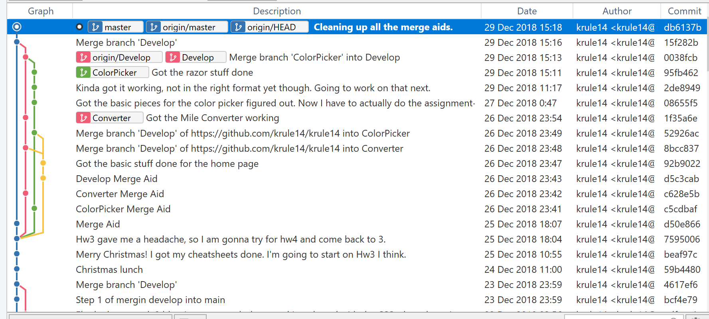
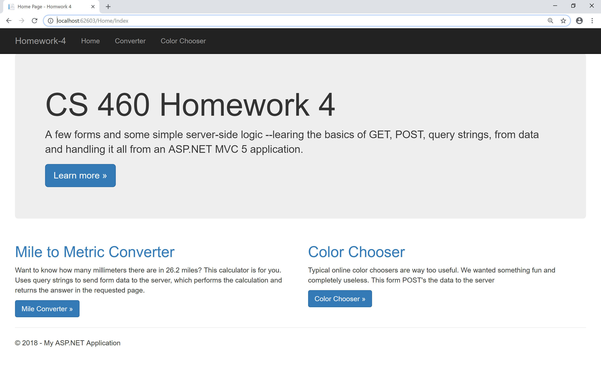
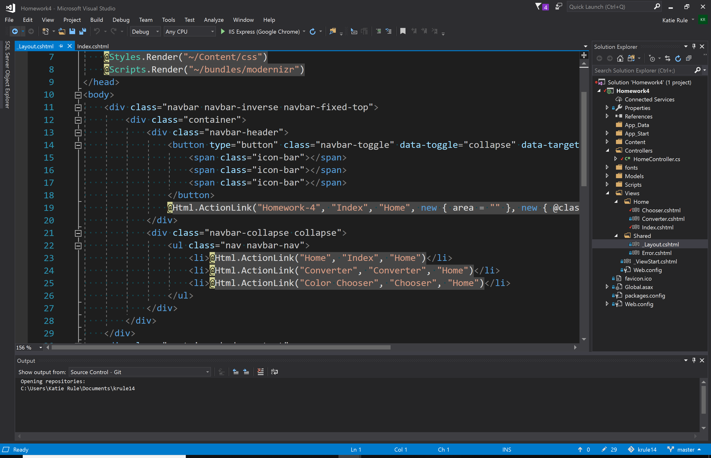
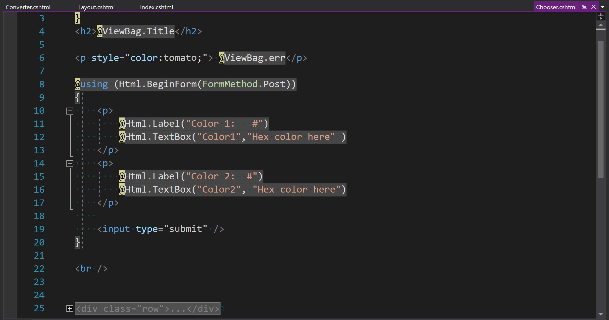
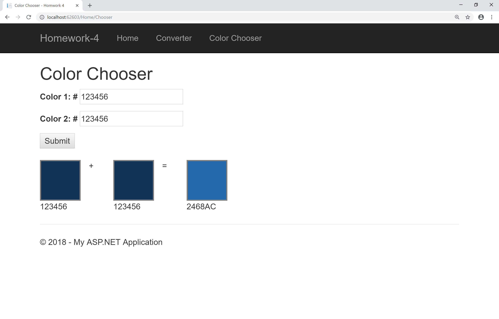
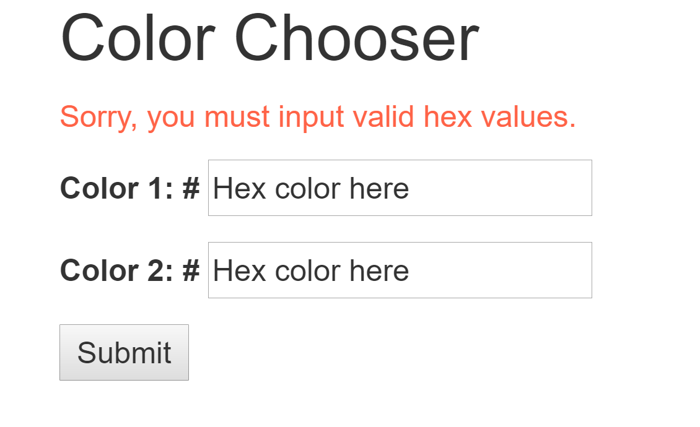

Homework 4 Blog
Question 1
[Planning] Implement the following features in one or more feature branches. Merge each into master when finished. If things are going well with Git, try to implemement two parts of what is below in two different feature branches. Don't merge them back in until both of them are done. This will let you see a little of what can happen when two or more developers are working on the code at the same time. You'll get some practice with merge conflicts.
Solution

Question 2
[Content/Coding] Create a “Home” default landing page that will contain links to each of the other pages you'll create in the tasks below. You must use Razor @Html.ActionLink HTML helper methods to do this. (Implied in this is that you have an appropriately named controller with action method and a suitable view.)
Solution
Here you can see that I created a landing page with links and buttons that link to the other pages. 
Here you can see that I used several instances of actionlink. 
Question 3
[Content/Coding]Simple Server-Side Dynamic page using HTTP GET Recreate the "Mile to Metric Converter" page and functionality (note the route must be the same, which affects your Controller and View names) shown here:
This is as it appears after the user has typed a number in the Miles input, selected Kilometers and clicked the Convert button. The answer appears below. Note the route.
You must write the form elements yourself using only HTML -- no Razor HTML helpers are allowed for this page. Your controller action method must use GET only and can't have any parameters -- you need to get the form data out of the Request object.
This page demonstrates that that you can write a simple HTML form, send data to the server as query strings, extract that data within a controller action method by using the Request object, perform some computation with it, and finally pass data to a view which builds a new page for the user containing the resulting new, procedurally created, content.
Now is a great time to start using the debugging and inspection tools available to you:
- developer tools in the browser
Debug.WriteLineand the debug output window in Visual Studio- Visual Studio's very nice debugger (set a break point and then run with F5 rather than Ctrl-F5)
- Use Postman
You should be able to inspect the page, form values leaving the browser, form values received by the server (localhost in this case) and anything else going on in ASP.NET.
Solution
Below you see that I did not use razor methods for the form.
Below you see that I used the request object.
Question 4
[Content/Coding]Simple Server-Side Dynamic page using HTTP POST Recreate this Color Mixer page:
Here are some requirements for this page:
- You must use Razor's HTML Helpers for all form input elements (2 input elements for the colors plus the form itself)
- You must POST the data to your app
-
Your controller action method must use parameter binding to retrieve the form data. i.e. this parameter binding would work for a form that sent two integers and a string in the body of a HTTP POST:
[HttpPost] public ActionResult MyPage(int? id, int? size, string kind) { //... } - To mix colors you can make up an algorithm or use this one: add the red components together, add the green together, and add the blues together, then if any of the values is greater than 255, set it to 255, i.e. clip it at the maximum value of 255 or FF. That's what my version does. C# has
ColorandColorTranslatorclasses to help with this a bit. - Make your page robust so that if, for example, the user doesn't enter a color, or they type something that isn't a hexadecimal HTML color, no errors are generated and you tell them that it's required. This is generally referred to as form validation. I suggest you do it client side using HTML (not javascript) and also server side with C#. Always validate your input before using!!!
Solution
As you can see, I used Razor. 
As you can see I used Post, and used parameter binding.
As you can see, my mixer works fairly well. It also clips. This will be better shown in the video below. 
As you can see, it has some validation. This is easier to see in the video below. 
Question 5
[Requirements] Here's a video walkthrough to help you get all the pieces right. I explain how each page works and explain the requirements further. So the video capture (OBS Studio) would capture the input validation popups I had to record full screen, which made the video huge.Solution
If your browser doesn't support video, here is a link to the video instead.
Check out the project!
Check out the code!
The code is in my github repository, see it here: